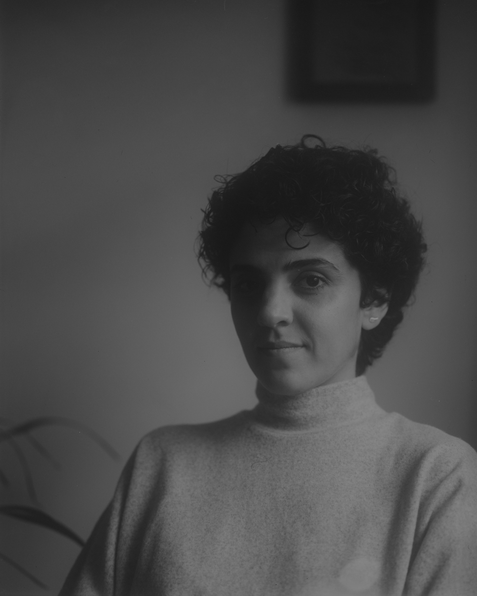

I was born in 1992 in my hometown, Kerman, Iran, where I lived until 2016.
In 2016, I completed my Master’s in Pure Mathematics and with my husband we moved to Paris. Living there was a distinctive experience; the city’s rich culture and art quietly reignited my interest in painting and drawing. I began to reconnect with art through experiments with oil paints, coloured pencils, and pastels. In 2019, I decided to return to mathematics and began a Master’s in Applied Mathematics at Sorbonne University.
I moved to Vienna in 2021 and had to continue the master's programme online, alongside remote courses in drawing. Drawn ever deeper into the world of art, I eventually chose to leave the Master’s behind and devote myself fully to painting—seeking to explore my artistic strengths beyond materials and media. I further refined my skills by taking online courses in art and spent one year working under the supervision of Hessam Samavatian.
I have been based in Gdańsk, Poland.